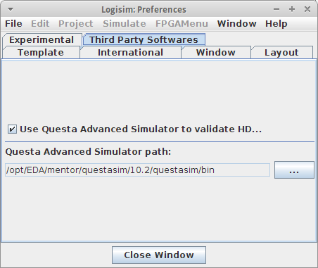

配置 Questa 高级模拟器
Questa Advanced Simulator 可以选择用于验证 VHDL 实体，并且是使用 VHDL 实体的任何模拟所必需的。
默认情况下，使用 Questa Advanced Simulator 进行 VHDL 验证处于禁用状态。 为了激活它，您需要进入窗口菜单、首选项，然后进入第三方软件选项卡。 然后，您可以通过单击使用 Questa Advanced Simulator 验证 VHDL 实体复选框来启用验证。

在该选项的正下方，您还可以设置 Questa Advanced Simulator 安装目录的路径。 为此，只需单击浏览...按钮并选择相应的目录。 如果您激活验证但未设置路径，则下次进行 VHDL 验证时系统将提示您选择它。
注意：如果您尝试运行包含 VHDL 实体的电路仿真，系统也会提示您输入路径。
下一节: VHDL模拟器.